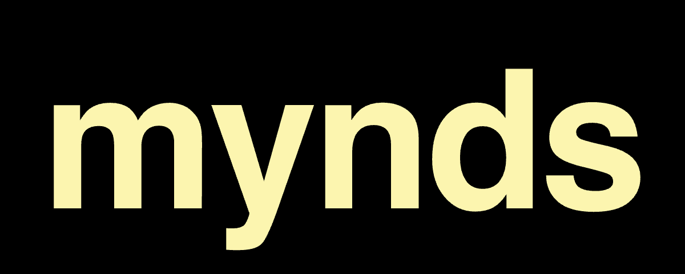

Begleitung für die Therapie-Wartezeit. Diese Folien zeigen, wie die Marke aussieht und klingt. Stand: Oktober 2026.
mynds Marken-Folien1 / 9
Die Wortmarke: kleingeschrieben, immer.
Outfit Bold, ohne Container, ohne Punkt, ohne Versalien. Auf Weiß und Creme in Schwarz, auf Schwarz und Blau in Creme. Nie in Orange oder Rot. Dateien auf der Brand-Seite.
mynds Marken-Folien2 / 9
Das Monogramm: ein rundes m.
Für Favicon, App-Icon und enge Plätze. Creme auf Blau ist die Standard-Stimmung: ruhig, erwachsen, kein Medizin-Look.
mynds Marken-Folien3 / 9
Die Farben: nur diese sechs.
Creme #FCF5AF
Orange #F0A533
Tieforange #E44F0A
Rot #BA011A
Blau #0B4B8B
Schwarz #000000
Creme trägt den hellen Grund, Schwarz den dunklen, Orange die Aktion, Blau die Nähe. Rot ist der Frage-Impuls und destruktive Aktionen — nie Nutzerzustände, nie die Krisenkarte.
mynds Marken-Folien4 / 9
Die Typografie: zwei Schriften, self-hosted.
Outfit
Albert Sans
Outfit für Logo, Überschriften und Zahlen. Albert Sans für Fließtext und Oberfläche. Beide als variable Fonts eingebettet — keine Anfrage an Google (DSGVO).
mynds Marken-Folien5 / 9
„Was geht dir gerade durch den Kopf?"
Nähe.
Warm, ruhig, ehrlich, auf Augenhöhe. Du-Anrede, keine Dringlichkeit, keine Belohnungslogik, kein Gamification, kein Medizin-Look, kein Alarm.
mynds Marken-Folien6 / 9
Die Worte: was wir sagen, was nie.
Erlaubt
begleiten
strukturieren
sammeln
einordnen
vorbereiten
Nie
behandeln
diagnostizieren
überwachen
heilen
therapieren
Keine Heilungs- oder Diagnose-Versprechen in irgendeiner Optik. Die Krisen-Nummern bleiben sichtbar, wo Betroffene sie suchen — Pflicht, keine Design-Option. Die Krisenkarte bleibt blau.
mynds Marken-Folien7 / 9
Die Anwendung: die Marke im Netz.

Die Landing-Page lebt vom Wortzeichen als Monument: weißes Papier, schwarze Schrift, Orange nur auf der Aktion. Die App erscheint in ihrem echten Dark Mode — Blau, Creme, Outfit.